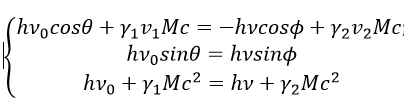
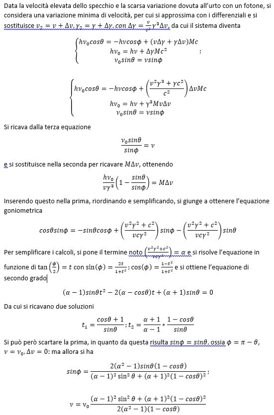

lance0026 nov 2018, 18:19
Uno specchio di massa \(M\) si muove con velocità \(v\) molto grande nel verso positivo dell'asse \(x\). Su di esso incide un fascio di luce (proveniente da sinistra) che forma un angolo \(\theta\) rispetto alla verticale dello specchio. Calcolare l'angolo di riflessione \(\phi\) nell'ipotesi di urti elastici.
Per chi non se lo ricordasse: quantità di moto del fotone = \(\frac{hf}{c}\); energia del fotone = \(hf\)
BONUS: se la frequenza iniziale è \(f\) quanto vale la frequenza del raggio riflesso?
sg_gamma27 nov 2018, 12:12
Il sistema da risolvere per il problema è per caso questo? Sono rispettivamente: la conservazione della quantità di moto lungo x, quella lungo y, la conservazione dell'energia. Da questo sistema dovrebbe potersi anche ricavare \(\nu\) in funzione di \(\nu_0\) e quindi risolvere il bonus...è davvero necessario risolvere il sistema, qualora corretto, o posso darlo in pasto ai calcolatori?

- Cattura.PNG (6.27 KiB) Visto 4896 volte
lance0027 nov 2018, 16:15
Il sistema è giusto e si, puoi risolverlo col computer (magari facendo qualche approssimazione). Mi rendo conto però che così non è molto istruttivo (errore mio) quindi se per te va bene cambierei il problema in “specchio non relativistico“ ossia: V è abbastanza grande per avere un effetto apprezzabile ma abbastanza piccola per usare ancora energia e quantità di moto classici. Adesso il sistema dovrebbe essere risolvibile a mano. Se posti la soluzione in questo caso particolare ti do il testimone (adesso sono solo conti) ;)
sg_gamma28 nov 2018, 19:33
Spero che i conti non siano andati a farsi benedire e chiedo perdono per il mio eretico uso di Word.

- Cattur23a.JPG (80.47 KiB) Visto 4848 volte
lance0029 nov 2018, 19:14
Benone! Vedo che hai seguito il consiglio che ti ho dato in privato... come vedi oltre a impostare il sistemone iniziale e a calcolarti cose brutte (tipo il differenziale di \(\gamma\)) il resto sono solo calcoli. In ogni caso, complimenti perchè i conti erano davvero molto brutti ... e mi pare sia tutto perfetto. Quindi puoi postare il 169 :D